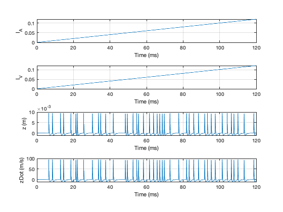
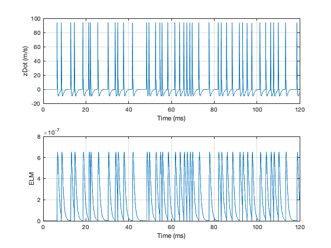

Tokamak Plasma Dynamics Demo
Simulates a model of the vertical position of an elongated plasma in a Tokamak. The vertical position is unstable and can be represented by one unstable mode and one stable mode and a time delay. The Edge Localized Modes (ELM) are the only disturbance.
Contents
Reference:
1. Scibile, L. and B. Kouvaritakis (2001.) "A Discrete Adaptive Near-Time Optimum Control for the Plasma Vertical Position in a Tokamak." IEEE Transactions on Control System Technology. Vol. 9, No. 1, January 2001. 2. Scibile, L., "Non-linear Control of the Plasma Vertical Position in a Tokamak," Ph.D Thesis, University of Oxford, 1997. ------------------------------------------------------------------------
Constants
d = RHSTokamak; tau1ELM = 6.0e-4; % ELM time constant 1 tau2ELM = 1.7e-4; % ELM time constant 2 kELM = 1.5e-6; % ELM gain matches Figure 2.9 in Reference 2 tRepELM = 48e-3; % ELM repetition time (s)
Eigenvalues Mode 1 -2.67 Mode 2 115.16
The control sampling period and the simulation integration time step
dT = 1e-4;
Number of sim steps
nSim = 1200;
Plotting array
xPlot = zeros(7,nSim);
Initial conditions
x = [0;0;0]; % State is zero t = 0; % % Time tRep = 0.001; % Time for the 1st ELM tELM = inf; % Prevents an ELM at the start zOld = 0; % For the first difference rate equation
Run the simulation
for k = 1:nSim d.v = 0; d.eLM = ELM( tau1ELM, tau2ELM, kELM, tELM ); tELM = tELM + dT; % Trigger another ELM if( t > tRep + rand*tRepELM ) tELM = 0; tRep = t; end x = RungeKutta( @RHSTokamak, x, t, dT, d ); [~,z] = RHSTokamak( x, t, d ); t = t + dT; zDot = (z - zOld)/dT; xPlot(:,k) = [x;z;zDot;d.eLM]; end
Plot the results
tPlot = dT*(0:nSim-1)*1000;
yL = {'I_A' 'I_V' 'v' 'z (m)' 'zDot (m/s)' 'ELM' 'ELMDot'};
k = [1 2 4 5];
PlotSet( tPlot, xPlot(k,:), 'x label', 'Time (ms)', 'y label', yL(k), 'figure title', 'Disruption Simulation' );
k = [5, 6];
PlotSet( tPlot, xPlot(k,:), 'x label', 'Time (ms)', 'y label', yL(k), 'figure title', 'ZDot and ELM' );
  Copyright
Copyright (c) 2019, 2022 Princeton Satellite Systems, Inc. All rights reserved.